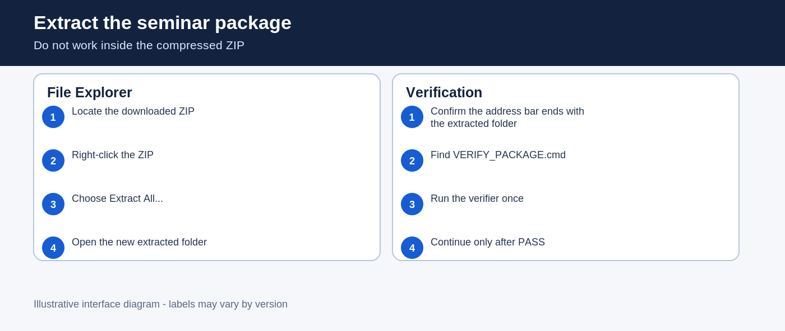
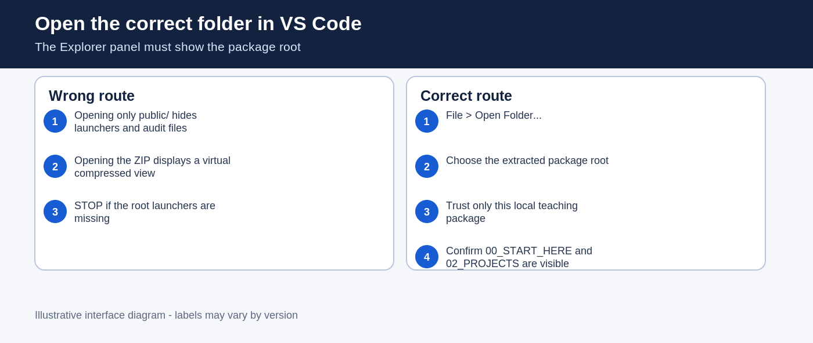
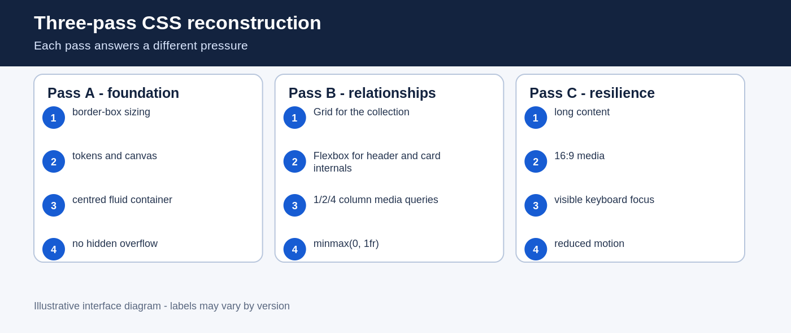
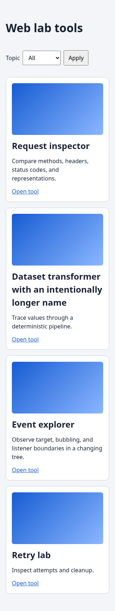
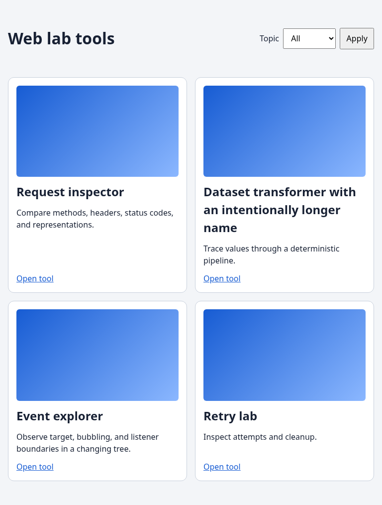
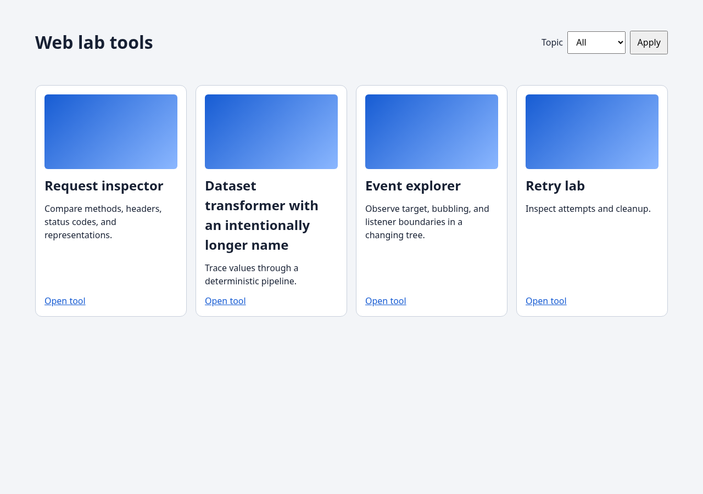
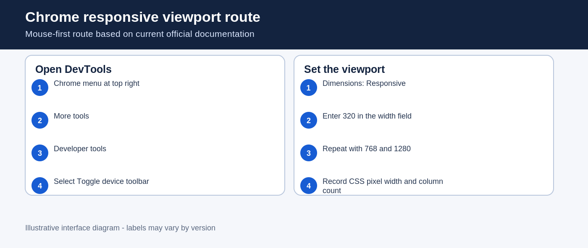
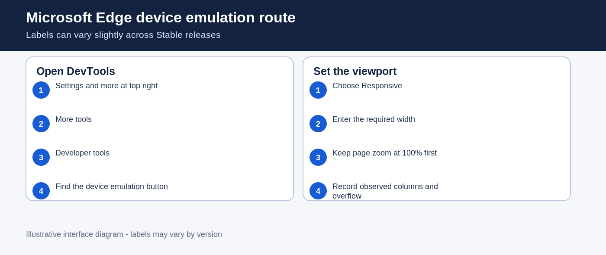
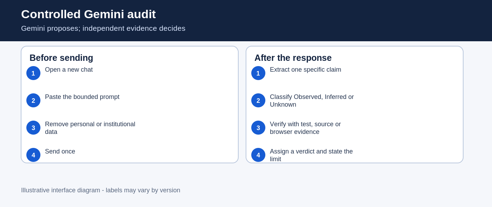
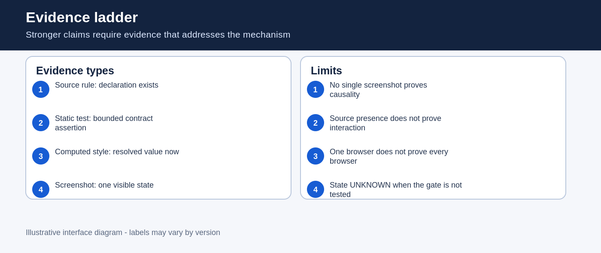

1. Orientation and privacy boundary
Your evidence must describe what you personally predicted, executed and observed. Gemini can propose an explanation. It cannot replace your tests or observations.
This guide works offline. External documentation and Gemini require a network connection.
2. Extract the ZIP before doing anything else
Extract the complete archive
Do not open files from the compressed ZIP window. A compressed view can look like a normal folder while launchers and relative paths fail.
00_START_HERE, 02_PROJECTS, 90_AUDIT and root launchers.
3. Verify the package
Run the package verifier once
On Windows, double-click VERIFY_PACKAGE.cmd. On macOS or Linux, open a terminal in the package root and run the command below.
./VERIFY_PACKAGE.shVERDICT: PASS_PACKAGE_INTEGRITY_EXACT_SET and a PACKAGE_ID.4. Check the exact environment
This seminar's qualified route requires Node.js v24.21.0 and npm 11.19.0. The checker never downloads or installs software.
Run CHECK_ENVIRONMENT
Double-click CHECK_ENVIRONMENT.cmd on Windows or run ./CHECK_ENVIRONMENT.sh on macOS/Linux.
5. Open the correct folder in VS Code
Open the package root, not only the project folder
Open VS Code. Use File > Open Folder.... Select the extracted folder whose name starts with TW2026_S02_STUDENT....
00_START_HERE and 02_PROJECTS are both visible.public, you opened the wrong folder.
6. Write predictions before execution
Complete two falsifiable predictions
Open 01_WORKSHEET/STUDENT_WORKSHEET_S02_v2.3_EN_GB.docx or the Moodle form. Write the predictions before running the initial-state verifier.
| Prediction | What would falsify it? |
|---|---|
| At 320, 768 and 1280 CSS pixels the finished layout will have 1, 2 and 4 columns. | A different track count, horizontal overflow, clipped content or a fixed-width card. |
| An unbroken business identifier will expose intrinsic sizing pressure unless the grid item can shrink and the content can wrap. | The token remains readable without the targeted sizing/wrapping rules, or the apparent fix only hides content. |
7. Verify the designed initial state
Run VERIFY_INITIAL_STATE
Double-click VERIFY_INITIAL_STATE.cmd or run ./VERIFY_INITIAL_STATE.sh.
| Suite | Required initial result | Interpretation |
|---|---|---|
| baseline | 1 pass, 0 fail | The fixed semantic document is healthy. |
| objective | 0 pass, exactly 3 assertion failures | The authored CSS relationships are deliberately absent. |
| regression | 2 pass, 0 fail | The scaffold does not contain forbidden shortcuts. |
For targeted primary references to Grid, Flexbox, focus, reflow and motion, read the S02 reference register. The 1/2/4 columns and 72rem cap are local teaching constraints.
8. Read the constraint model before editing
Open 02_PROJECTS/RESPONSIVE_CARD_GRID/visual-spec.md and inspect the fixed semantic HTML. The page document is not the part you reconstruct. Your single editable surface is public/styles.css.

Start the local project before Pass A
Keep the project server running while you work
From the extracted package root, double-click START_PROJECT.cmd on Windows. On macOS or Linux, open a terminal in that root and run bash START_PROJECT.sh.
The terminal prints S02 local project: http://127.0.0.1:PORT. Copy the complete printed URL, including its port, into your chosen browser. The unstyled cards are the expected initial page. Keep the server terminal open. Save CSS in VS Code and refresh this local page after each change.
When finished, use STOP_PROJECT.cmd or bash STOP_PROJECT.sh, or press Ctrl+C in the server terminal. Do not start a second copy to repair an old tab. If no URL appears, record the error, stop and use the troubleshooting route.
9. Pass A - foundation
Make sizing and the page container measurable
Open 02_PROJECTS/RESPONSIVE_CARD_GRID/public/styles.css. Keep the supplied tokens. Add border-box sizing, body defaults and a centred fluid container. Save the file.
overflow-x:hidden.Reveal the mechanism checklist, not the complete solution
- Global
box-sizing:border-boxmust include pseudo-elements. - The page width must be fluid and capped at 72rem.
- Body margin, background, text colour and line height must be explicit.
10. Pass B - relationships
Model the collection and card internals
Use Grid for .card-grid. Start with one minmax(0, 1fr) track. At 40rem use two tracks. At 64rem use four tracks. Use Flexbox for the header and cards.
auto-fit is not accepted for this exact teaching contract, even if it looks plausible.


11. Pass C - resilience under real content and interaction
Protect content without hiding evidence
Add the 16:9 media ratio, intrinsic sizing repair, bottom-aligned actions, visible focus and reduced-motion rule. Use wrapping and shrinkable tracks. Do not conceal the symptom.
overflow-x:hidden removes the scrollbar while allowing text or controls to disappear. The symptom looks quieter, but the contract is still broken.Reveal the supplied long-token experiment
With the local project open, open DevTools Console for the local 127.0.0.1 page, paste the command once and press Enter:
document.querySelector('.card p').textContent='RO49AAAA1B31007593840000-ENTERPRISE-SERVICE-CATALOGUE-IDENTIFIER-WITHOUT-BREAKS'Refresh the page after recording the observation. This changes the live DOM only and does not edit the source file.
12. Collect viewport evidence in a real browser
Chrome route
- Open the Chrome menu at the top right.
- Choose More tools, then Developer tools.
- In DevTools, select Toggle device toolbar.
- Keep Responsive selected and type 320 in the width field. Repeat with 768 and 1280.

Microsoft Edge route
- Open Settings and more at the top right.
- Choose More tools, then Developer tools.
- Select the device emulation control in the DevTools action bar.
- Use Responsive dimensions and test 320, 768 and 1280.

Firefox route
- Open the Firefox menu.
- Choose Browser Tools or More tools, depending on the release.
- Select Responsive Design Mode.
- Edit the width value to 320, 768 and 1280.

| Width | Expected | Record | Limit |
|---|---|---|---|
| 320 | 1 column, no horizontal overflow | Columns, scrollWidth/clientWidth and long-token observation | One browser and one state only |
| 768 | 2 equal columns | Resolved grid tracks and screenshot | Screenshot alone does not prove mechanism |
| 1280 | 4 columns inside the 72rem container | Resolved tracks and container observation | Does not prove every larger width |
http://127.0.0.1:, stop. You may be inspecting an unrelated tab and collecting the wrong evidence.13. Keyboard focus and reduced motion
Test two separate behaviours
First, click the page background and press Tab repeatedly. Record the element that receives focus and whether the indicator is clearly visible. Second, enable the operating system or browser reduced-motion preference and confirm that the card-link transition is disabled.
UNKNOWN and state which gate was not executed.14. Controlled Gemini audit
Gemini is a preliminary reviewer. You will submit one bounded prompt, extract one specific claim and verify it independently.
Review the proposed CSS patch below against this exact contract: one column below 40rem, two columns from 40rem, four columns from 64rem, no fixed card width, no hidden overflow, visible keyboard focus and reduced motion. Identify two counterexamples. Separate what you can infer from the source from what requires browser execution. Do not rewrite the complete solution.- Open a new browser tab and go to
gemini.google.com. - Start a new chat. Interface labels can change, so use the control that creates an empty conversation.
- Check the prompt for passwords, tokens, private code, Moodle data and personal information.
- Paste the bounded prompt and the supplied flawed patch. Send it once.
- Wait for the response to finish, then extract one claim only.
- Classify the claim as Observed, Inferred or Unknown.
- Verify it through a test, source rule, computed value or bounded manual observation.
03_AI_AUDIT/FLAWED_PATCH_OR_CLAIM.txt. Classify a width calculation or source inspection as Inferred. The bad state in the offline laboratory is a supplied model. A passing repaired project does not, by itself, prove what the flawed patch would do. Record that limit and do not invent an AI response or personal execution evidence.The claim is supported within the stated limit.
The claim conflicts with reproducible evidence.
Only a bounded part is supported.
The required gate was not executed or evidence is insufficient.

15. Verify the completed work
Run VERIFY_WORK_RESULT
Double-click VERIFY_WORK_RESULT.cmd or run ./VERIFY_WORK_RESULT.sh.
public/styles.css may differ from the package scaffold.16. Complete the offline form and create one PDF
Open FORM_S02_EN_GB.html
Double-click OPEN_MOODLE_FORM.cmd or use the shell launcher. The form saves locally in your browser and transmits nothing.
- Complete the evidence fields using your own records. If a route was unavailable, write NOT EXECUTED and its reason; supplied reference observations must be labelled SUPPLIED, not personally executed.
- Use the privacy check. Remove email addresses, tokens, credentials and unrelated screenshots.
- Confirm the generated filename:
TW2026_S02_GROUP_Surname_Firstname.pdf. - Select Print / Save as PDF, choose Save as PDF and inspect the resulting file.
- Open the PDF and check every page, including the last lines of long evidence. Then tick the post-export PDF review box and use Validate for Moodle upload. Re-export if you change evidence or need the review declaration in the final PDF.
node_modules, the complete Gemini conversation or a screenshot-only report.17. Submit through the private Moodle Assignment
This route is generic because no exact, current screenshot from online.ase.ro is embedded in the package. Labels can vary by Moodle version and institutional configuration.
- Log in through the institution's normal route.
- Open the correct course and Week 02.
- Open the Assignment whose title matches S02.
- Choose Add submission or the equivalent upload control.
- Upload one PDF. Wait until the filename appears completely.
- Choose Save changes.
- If Submit assignment is present, use it and confirm.
- Check the final status, filename and timestamp.

18. Exit ticket and hard STOP
Write four connected sentences:
- one claim supported by your evidence;
- the CSS mechanism that explains it;
- the evidence that supports the claim;
- the limit of that evidence.
Optional extension after the hard STOP
Open the CSS Museum of Bad Ideas in 04_OFFLINE_FALLBACK. Audit one exhibit only. Explain when a technically valid method becomes unsuitable for the current contract.
19. Troubleshooting wizard
20. Glossary
- CSS pixel
- The logical unit used by the browser's layout viewport. It is not necessarily one physical screen pixel.
- Constraint
- A required relationship or limit that the layout must preserve.
- Grid track
- A resolved row or column in a CSS Grid layout.
- Intrinsic minimum
- The minimum size suggested by content before an explicit shrinkability repair.
- Computed style
- The value resolved by the browser after cascade, inheritance and layout-related processing.
- Viewport
- The area used to lay out the page, measured here in CSS pixels.
- Baseline test
- A check that the supplied, immutable structure is healthy.
- Objective test
- A check for the authored relationships that are initially absent and must eventually pass.
- Regression test
- A guard against shortcuts that make the output look plausible while violating the contract.
- Evidence limit
- A statement of what the collected evidence does not establish.
Official documentation links
- Chrome DevTools Device Mode
- Microsoft Edge DevTools
- Firefox Responsive Design Mode
- MDN responsive design
